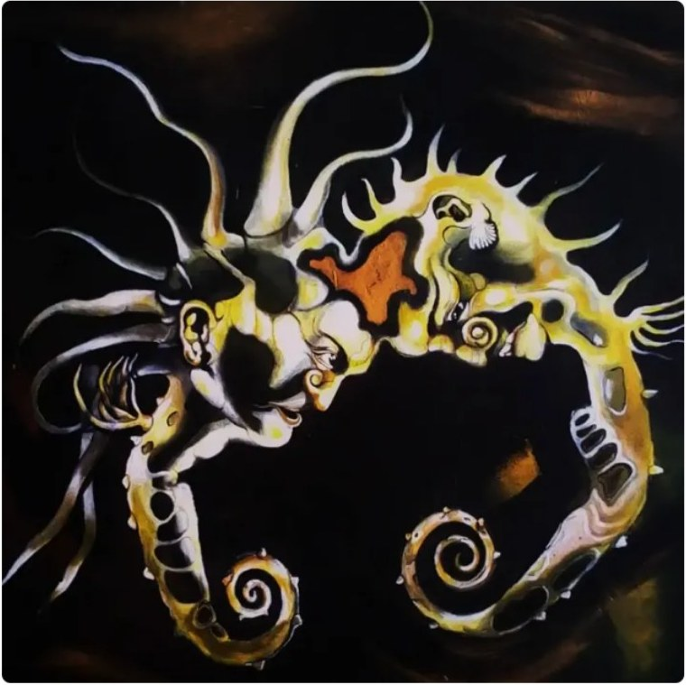
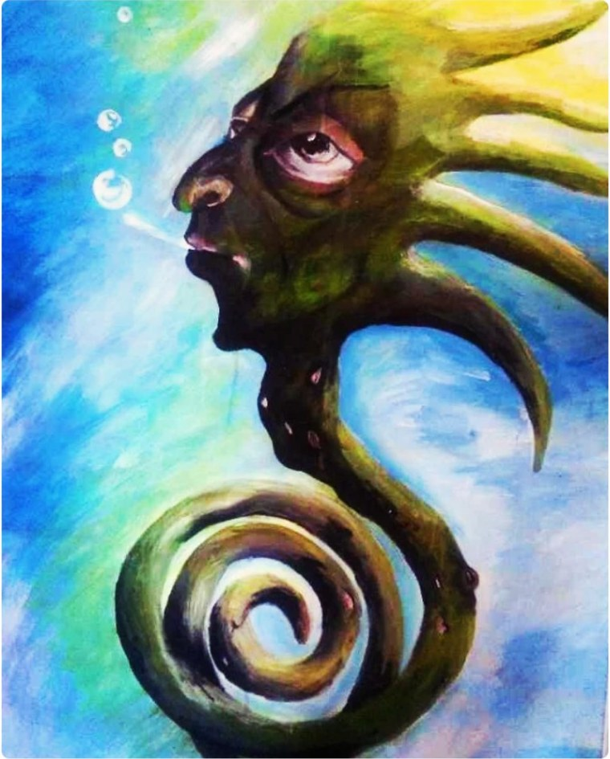
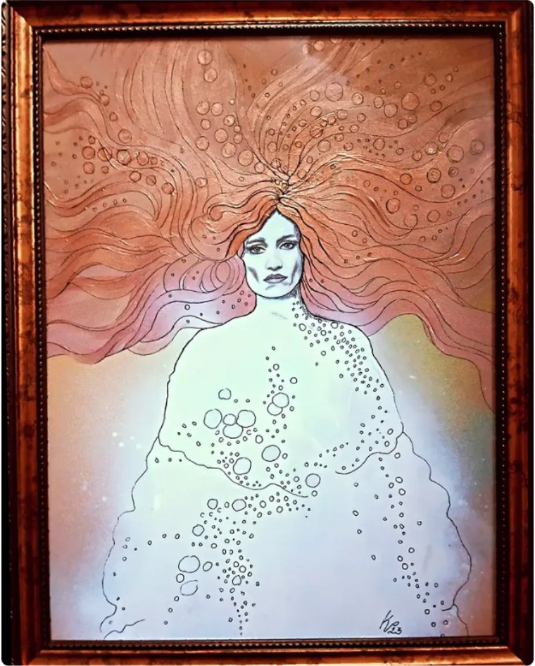
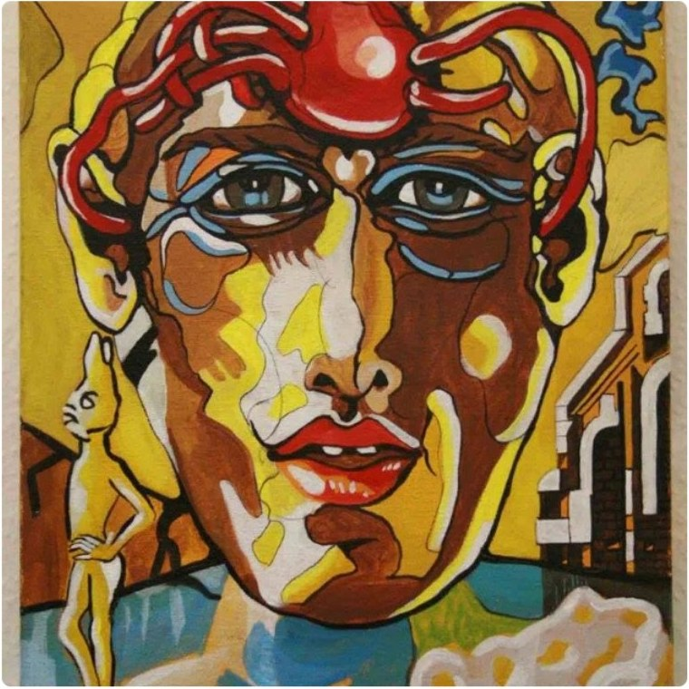
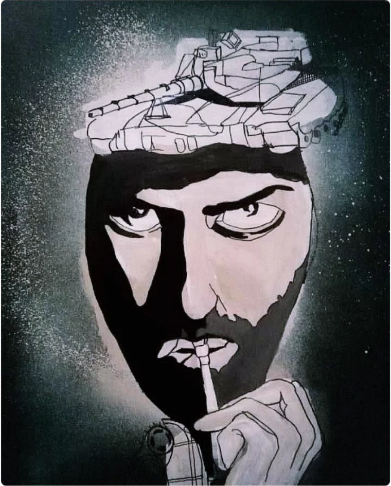
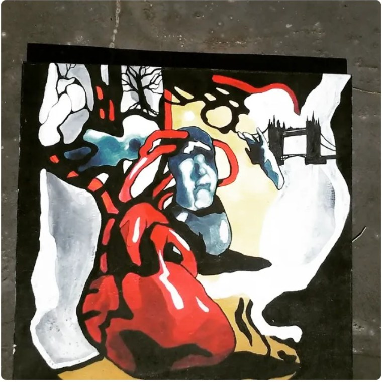
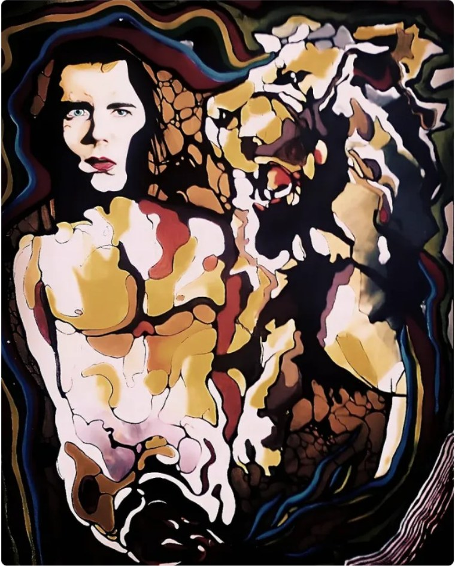

Original painting · tattoo direction
The Twin Sea Horses
Surreal mirrored forms, movement and symbolism from the original artwork.
ColourBlack & grey direction
Explore this artwork ↗Autorské obrazy, které žijí na kůži. Digitální kolekce tetovacích motivů podle mých originálních obrazů.
Explore individual paintings first. Each piece has its own mood, story and direction for colour or black-and-grey tattoo interpretation.

Original painting · tattoo direction
Surreal mirrored forms, movement and symbolism from the original artwork.

Original painting · tattoo direction
An expressive ocean creature with a looping spiral tail.

Original painting · tattoo direction
An ethereal portrait in expressive, warm colour.

Original painting · tattoo direction
A vivid portrait exploring the tension between thought and feeling.

Original painting · tattoo direction
A symbolic portrait with an intense gaze and tank motif.

Original painting · tattoo direction
A red figure and urban fragments inspired by the city.

Original painting · tattoo direction
Interconnected faces and abstract shapes from the original archive.
“I create images with a feeling behind them — not just a shape to copy.”
I'm Kateřina Pohnetalová. ART TO INK brings my original paintings into a new form: personal tattoo inspiration that keeps the emotion, colour and character of the artwork at its heart.
Choose a piece because it speaks to you, then explore how its shapes and story can live on skin with your tattoo artist.
For tattoo artists & studiosFour straightforward options for people who love the art and professionals who want to explore licensing.
Choose a featured artwork for your personal tattoo journey.
Choose signatureA broader collection for people drawn to more than one original piece.
Explore premiumFor tattoo artists exploring professional use of selected artwork concepts.
Artist accessFor studios interested in a wider collection and professional collaboration.
Studio accessReview product details and licence terms at checkout. Tattoo concepts are inspiration to discuss with a qualified tattoo artist; final placement and execution are individual.
Explore the paintings, discover the stories behind them, and bring the artwork you connect with to your tattoo artist.
Explore ART TO INK ↗